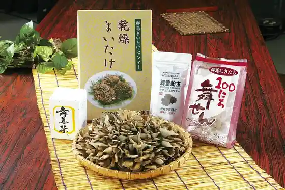
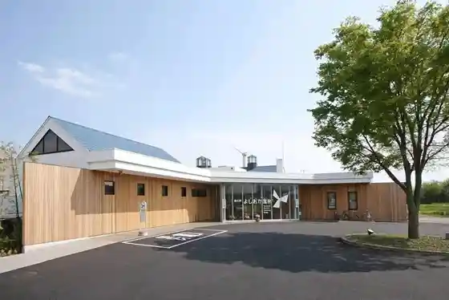
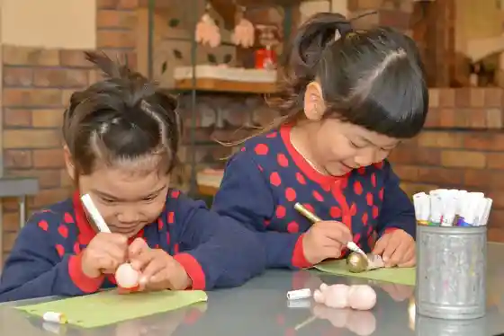
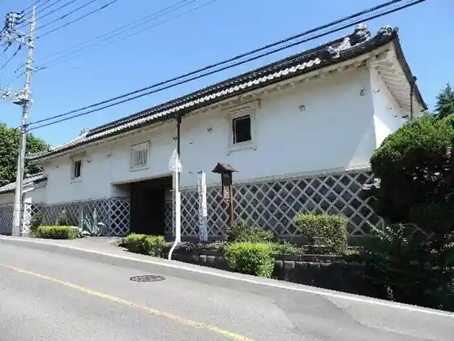

Gunma Maitake Center
Yoshioka, Gunma · 0279-54-8976 · Official / source link

Roadside Station Yoshioka Onsen
Yoshioka, Gunma · 0279-55-4126 · Official / source link

Ikaho Omochato Ningyo Jidosha Museum
Yoshioka, Gunma · 0279-55-5020 · Official / source link

Morita Kahon Ie
Yoshioka, Gunma · 080-3462-8797 · Official / source link

Urushihara Shidare Sakura Namiki
Yoshioka, Gunma · 0279-55-4126 · Official / source link
(Kabu) Gunma Maitake Center
Yoshioka, Gunma · 0279-54-8976 · Official / source link
Ogura Budo Sato
Yoshioka, Gunma · Official / source link
Sembi Taki
Yoshioka, Gunma · 0279-54-3111 · Official / source link
Mitsu Ya Burial Mound
Yoshioka, Gunma · 0279-54-9443 · Official / source link
Shiroyama Miharashi Park
Yoshioka, Gunma · Official / source link
Iori Furudo
Yoshioka, Gunma · 0279-54-8505 · Official / source link
(Ari) Yamaichi Ya
Yoshioka, Gunma · 0279-54-6088 · Official / source link
Ribatopia Yoshioka
Yoshioka, Gunma · 0279-55-4126 · Official / source link
Gunma Gurume to Meisan Hin no Iori Furudo
Yoshioka, Gunma · 0279-54-8505 · Official / source link
Okkirikomi no Furu Sato
Yoshioka, Gunma · 0279-54-4217 · Official / source link
Shoku no Eki Gunma Yoshioka Mise (Masa)
Yoshioka, Gunma · 0279-30-6111 · Official / source link
Yoshioka Shiroyama Miharashi Park
Yoshioka, Gunma · 0279-54-3111 · Official / source link
INU-MUSUBI[ Inumusubi ] (Okunai Okugai Dogguran / Kafe / Serufufotosutajio / Serufuosshu)
Yoshioka, Gunma · 080-2067-1776 · Official / source link